Offline Maps & Downloads
Offline maps let the base map render with no connection — the other half of caching off-grid (the first half being offline cache sets). Most offline map capabilities are part of Cachly Pro.
Pro Offline Maps PRO
Cachly Pro’s offline maps are worldwide vector maps built from OpenStreetMap data and optimized for readability. Download them via the map-layers icon or Settings › Cachly Pro › Download Offline Maps. Maps update every two weeks. Features include:
- Contours & hillshades as supplementary downloads, switching with your metric/imperial units.
- Customizable layer visibility — trails, 3D buildings, points of interest — and 3D map rendering.
- County lines & names for US states and comparable international regions — visible even at low zoom, so nearly a whole state’s county lines fit on screen.
- Trail symbols & colors from OpenStreetMap, plus optional bold road color schemes designed to match UK Ordnance Survey styling.
Points of interest & their icons PRO
Pro Offline Maps label points of interest with their own icons, colored by category — blue for transport, green for parks and outdoors, brown for culture and civic places, orange for food and drink, red for health and hazards, and so on. Here are all 129 POI icons you’ll see on the map:
- Aerialway
- Airfield
- Airport
- Alcohol shop
- American football
 Amusement park
Amusement park- Aquarium
- Art gallery
- Attraction
- Bakery
- Bank
- Bar
- Baseball
- Basketball
- BBQ
 Beachvolleyball
Beachvolleyball- Beer
- Bicycle
- Bicycle parking
- Bicycle rental
- Building
- Bus
- Butcher
- Cafe
- Campsite
- Car
- Casino
- Castle
- Cave entrance
- Cemetery
- Charging station
- Cinema
- Cliff
- Clothing store
- College
- Commercial
- Cricket
- Dam
- Danger
- Dentist
- Doctor
- Dog park
- Drinking water
- Embassy
- Entrance
- Fast food
- Ferry
- Fire station
- Flower
- Fuel
- Garden
- Gate
- Geocaching
- Gift
- Golf
- Grocery
- Hairdresser
- Harbor
- Heliport
- Horse racing
- Hospital
- Ice cream
- Industry
- Information
- Laundry
- Library
- Lighthouse
- Lodging
- Marine
- Military
- Monument
- Motor
- Motorcycle parking
- Mountain
- Museum
- Music
- National
- Native lands
- Park
- Parking
- Pharmacy
- Picnic site
- Pitch
- Place of worship
- Playground
- Police
- Post
- Prison
- Railway
- Light rail
- Metro / subway
- Ranger station
- Recycling
- Christian worship
- Jewish worship
- Muslim worship
- Restaurant
- Roadblock
- Rocket
- Ruins
- School
- Shelter
- Shop
- Skateboard
- Skiing
- Soccer
- Stadium
- Stream
- Suitcase
- Sushi
- Swimming
- Telephone
- Tennis
- Theatre
- Theme park
- Toilets
- Toll booth
- Town hall
- Trail
- Veterinary
- Volcano
- Volleyball
- Warehouse
- Waste basket
- Water
- Waterfall
- Wetland
- Wheelchair
- Zoo
Map styles PRO
Beyond the POI icons, Pro Offline Maps draw roads, paths, water, terrain and land use with a consistent visual language, grouped by type below. Each swatch shows the element’s color and line weight at a typical zoom level (widths scale as you zoom in and out). The optional UK Ordnance Survey bold road scheme recolors the main roads; its variants are shown at the end.
Roads
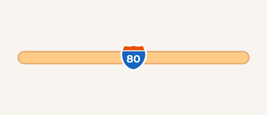
Motorway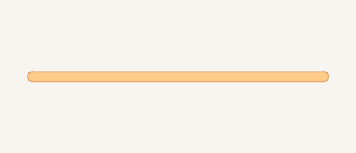
Motorway link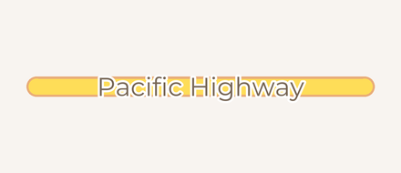
Trunk road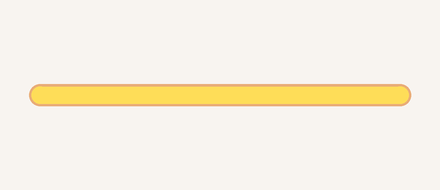
Primary road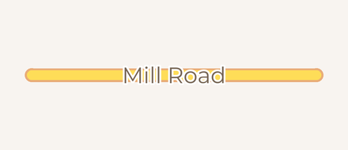
Secondary road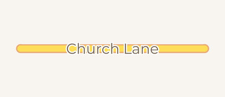
Tertiary road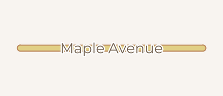
Minor / residential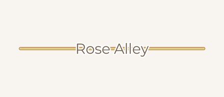
Service / alley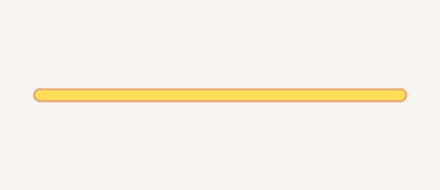
Link road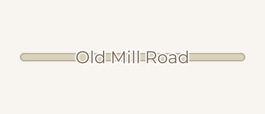
Unpaved road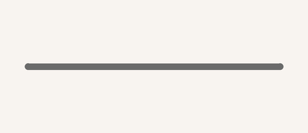
Under construction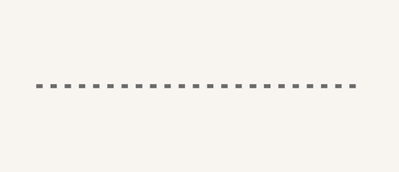
Access road
Paths & trails
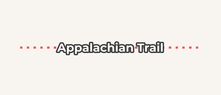
Path / trail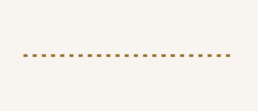
Track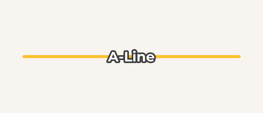
Mountain-bike trail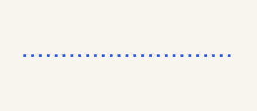
Cycle path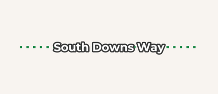
Bridleway- Sidewalk
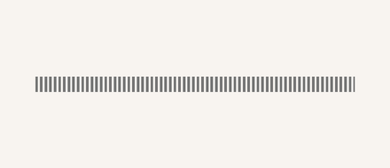
Steps- Raceway
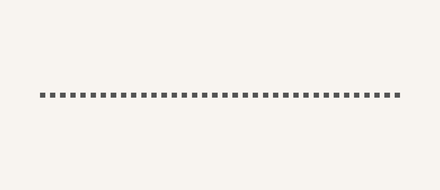
Motocross track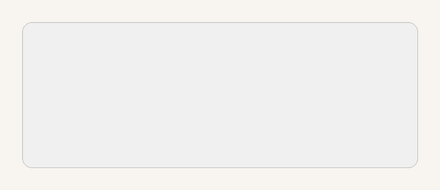
Pedestrian area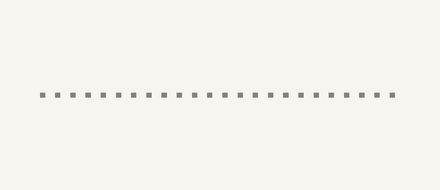
Waymarked route
Rail, air & ferry
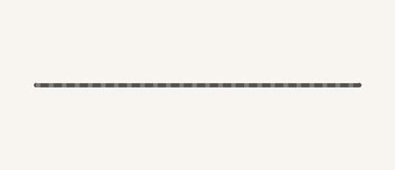
Railway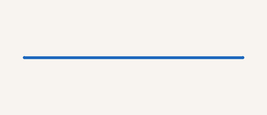
Subway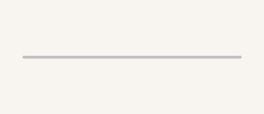
Service rail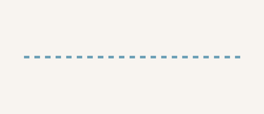
Ferry route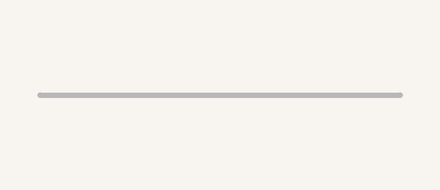
Pier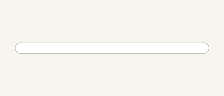
Airport runway- Power line
- Airport taxiway
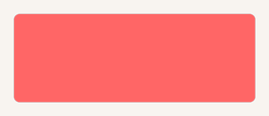
Helipad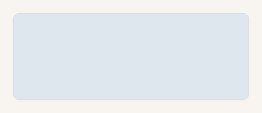
Airport apron Airport surface
Airport surface
Water
 Ocean / lake
Ocean / lake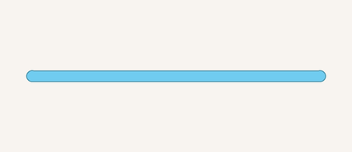
River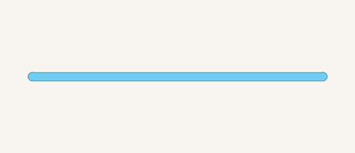
Stream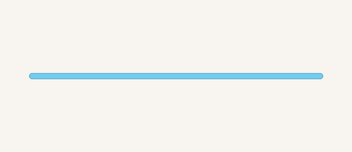
Canal / waterway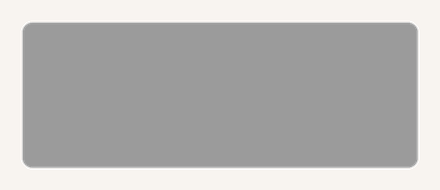
Dam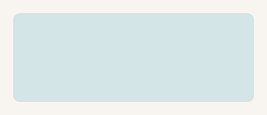
Basin / reservoir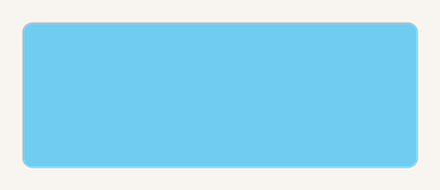
Lake / pond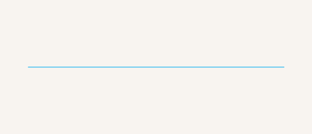
Ditch / drain
Land cover
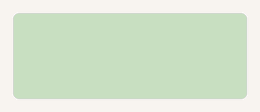
Woodland / forest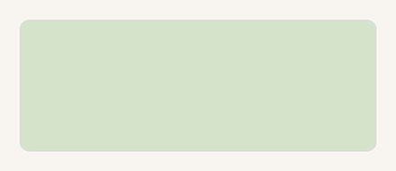
Grassland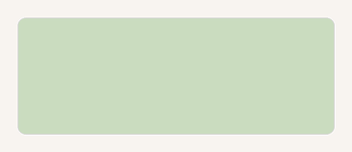
Wetland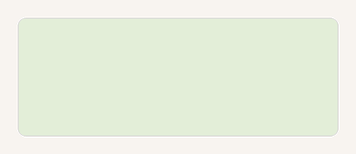
Farmland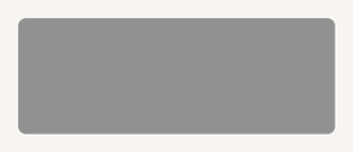
Bare rock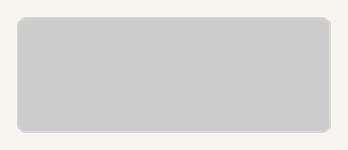
Scree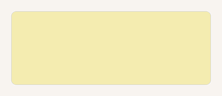
Sand / beach Glacier / ice
Glacier / ice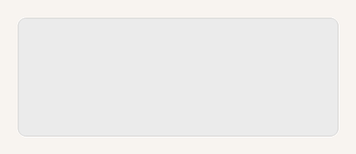
Quarry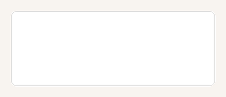
Ice shelf
Land use
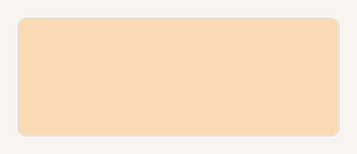
Residential area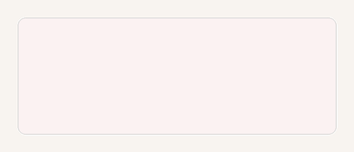
Commercial area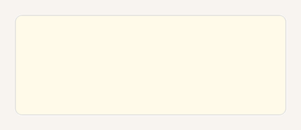
Industrial area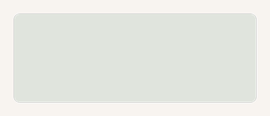
Cemetery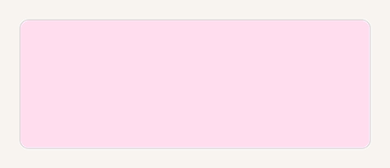
Hospital grounds- School grounds
- Military area
- Parking lot
- Aerodrome
- Winter sports
- Landfill
- Power station
- Indigenous / protected land
- Railway land
Parks & recreation
- Park
- National / protected park
- Sports pitch
- Playground
 Sports centre
Sports centre Protected area
Protected area Marine park
Marine park Military training area
Military training area- Park grass
Buildings & boundaries
- Building
- Country boundary
- State / province boundary
- County boundary
- Ceremonial county (England)
Contours
- Contour (major)
- Contour (minor)
- Contour (index)
- Contour (standard)
Skiing
- Downhill ski run
- Nordic ski trail
- Winter hiking trail
- Ski lift
Barriers, walls & cliffs
- Cliff / ridge
- Fence
- City wall
- Castle wall
- Castle grounds
- Ruins
Reference lines
- Latitude / longitude line
- Equator
UK Ordnance Survey bold roads
 Motorway
Motorway- Motorway link
- Trunk road
- Primary road
- Secondary road
- Tertiary road
- Minor road
Trail waymarks PRO
Waymarked hiking and cycling routes are drawn from their OpenStreetMap osmc:symbol tag, which Cachly builds in different configurations: a trail colour for the route line, plus an optional waymark symbol made of a background shape and a foreground mark, each in its own colour.
Trail colours — the colour of the route line on the map
- Blue
- White
- Yellow
- Red
- Red / white
- Purple
- Orange
- Orange / white
- Green
- Brown
Waymark backgrounds — the badge shape and colour behind a symbol
- Red
- Blue
- Green
- Yellow
- Orange
- Purple
- Brown
- Black
- White
- Red circle
- Blue circle
- Green circle
- Yellow circle
- White circle
- Black circle
 Green round
Green round Red round
Red round- Green frame
- Red frame
- Yellow frame
Waymark foreground symbols — drawn on the background in any trail colour (shown here in red)
- Bar
- Lower bar
- Stripe
- Cross
- X
- Slash
- Backslash
- Dot
- Circle
- Rectangle
- Rectangle (outline)
- Triangle
- Triangle (outline)
- Triangle (inverted)
- Diamond
- Diamond (outline)
- Corner
- Pointer
- Right arrow
- Arch
- Crest
- Bowl
- L
- Fork
- Turned T
- Drop
- Drop (outline)
- Heart
Pictorial waymark symbols — used on routes that carry a themed emblem
- Hiker
- Horse
- Shell
- Modern shell
- Ammonite
- Mine (hammer & pick)
- Tower
- Wolf’s hook
Offline map searching PRO
When an offline map is active on the Live tab, Cachly can search map features completely offline, within your currently visible screen area — zoom to frame your target region first. Toggle it on under Settings; enable Allows Partial Words so searching “water” matches waterfall and waterway. For structured point-of-interest queries by OpenStreetMap tag (parking, drinking water, bus stops…), see OSM POI Search.
Downloading a region
Choose a region to download; Cachly fetches it in the background (a background session keeps large downloads going even if you leave the app). The Downloads screen shows progress and manages what you’ve saved.
Custom tile URLs
Beyond the built-in sources, Cachly can load tiles from any tile server — specialist commercial maps or free ones (many free servers require your own API key). Open the Map Types panel, scroll to Custom Tile URLs and tap Add Custom Tile URL.
On the Tile URL Details screen, give the source a name and enter its URL template in z/x/y format — for example https://{s}.tile.openstreetmap.org/{z}/{x}/{y}.png:
{z},{x},{y}— zoom level and tile coordinates (required).{s}— rotates across the server’s subdomains.{q}or{quadtree}— for servers that address tiles with a quadtree key instead of z/x/y.
Under Geometry, enable TMS / Flipped Geometry for servers whose y-axis runs the other way (TMS layout). A Presets section offers ready-made configurations — such as UK OS Maps — so common services need no manual setup. Saved sources appear in the Map Types panel like any other map, and can be edited or removed later.
Other formats Cachly handles include MBTiles (with local tile search) and DeLorme PRO.